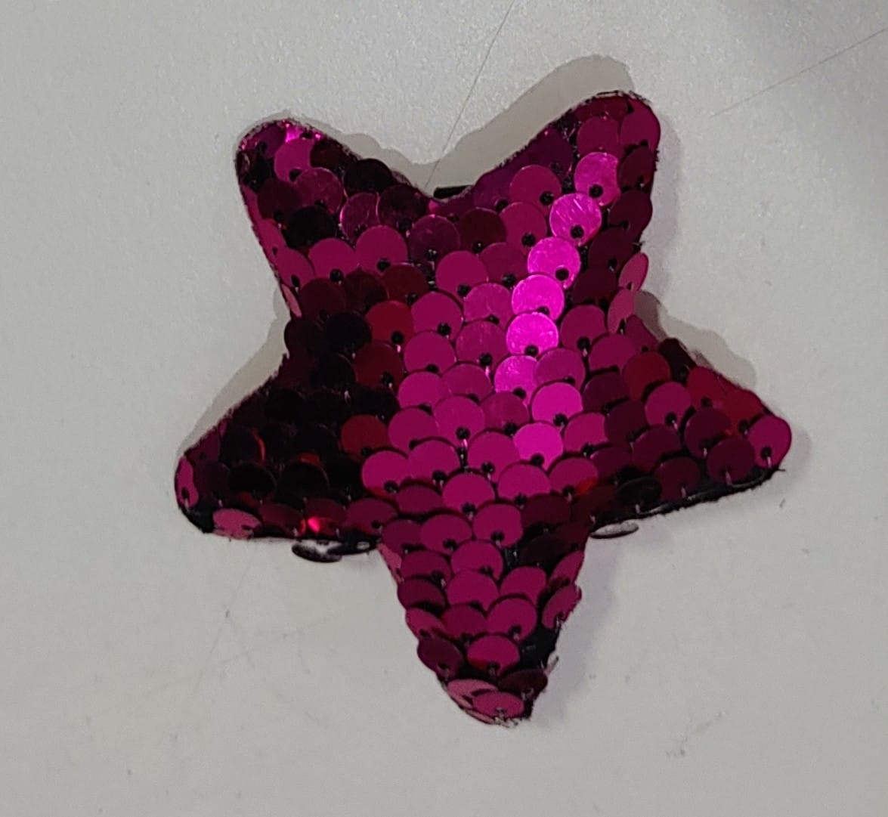
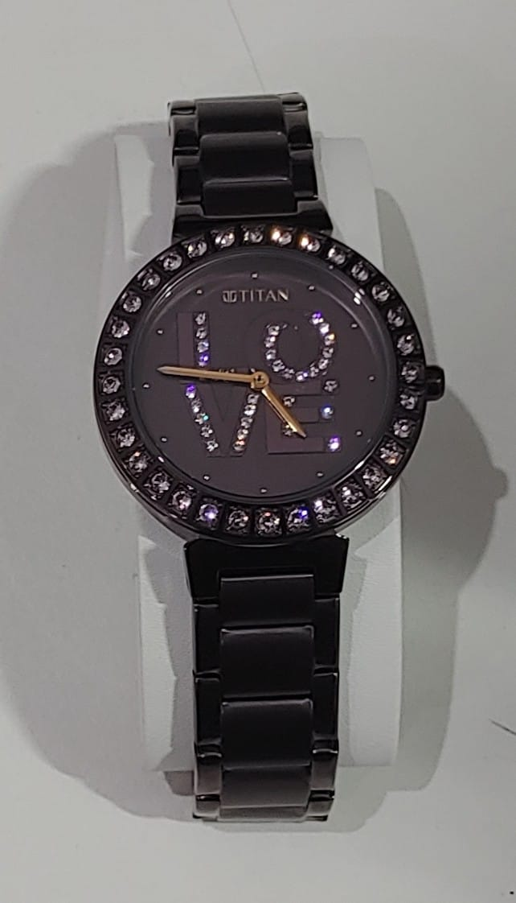
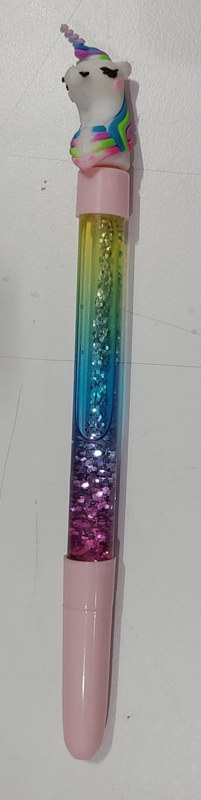

Output On Microsoft Azure -
a pair of sunglasses on a table.
Output On MobileNet Model -
Hand Blower
Result -
Microsoft Azure is more accurate.
2. Test Image-
Output On Microsoft Azure -
a close up of a pink wall.
Output On MobileNet Model -
Starfish
Result -
MobileNet is more accurate.
3. Test Image-
Output On Microsoft Azure -
a close up of a vase in front of a mirror.
Output On MobileNet Model -
Ladle
Result -
No One is accurate.
4. Test Image-
Output On Microsoft Azure -
a close up of a watch.
Output On MobileNet Model -
Holster
Result -
Microsoft Azure is more accurate.
5. Test Image-
Output On Microsoft Azure -
a close up of a towel.
Output On MobileNet Model -
Pocketbook
Result -
MobileNet is more accurate.
6. Test Image-
Output On Microsoft Azure -
diagram.
Output On MobileNet Model -
Ballpoint Pen
Result -
MobileNet is more accurate.
I have tested 6 images. MobileNet
has predicted
3
of them correctly and
Microsoft Azure
has predicted
2
of them correctly.
So according to my case study
MobileNet
is more accurate.